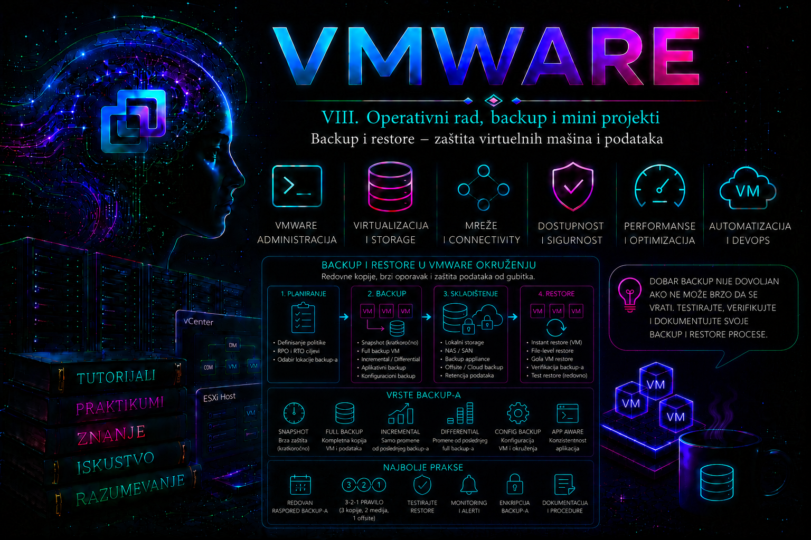

VMware

Zašto backup nije isto što i Disaster Recovery
Jedna od najčešćih grešaka novih VMware administratora jeste pretpostavka da su HA, DRS, vMotion i snapshot dovoljno dobra zaštita podataka. Nijedna od ovih tehnologija nije razvijena kao zamena za backup.
vMotion obezbeđuje migraciju bez prekida rada. HA ponovo pokreće VM nakon otkaza hosta. DRS raspoređuje opterećenje između hostova. Snapshot privremeno čuva stanje VM-a radi kratkoročnog vraćanja tokom administrativnih promena.
Ako administrator slučajno obriše bazu podataka, ransomware šifruje sadržaj, aplikacija korumpira podatke ili korisnik izbriše direktorijum pre sedam dana, nijedna od ovih funkcija neće vratiti izgubljene podatke.
Backup predstavlja zaseban proces čiji je cilj očuvanje podataka nezavisno od trenutnog stanja produkcionog sistema. Restore predstavlja kontrolisan proces vraćanja tih podataka u operativno stanje.
Enterprise administratori zbog toga razmišljaju o tri potpuno različita pitanja:
- kako sprečiti prekid rada;
- kako zaštititi podatke;
- kako vratiti sistem nakon incidenta.
Ova tri pitanja imaju različite tehnologije, različite procedure i različite administrativne odgovornosti.
Šta se zapravo bekapuje u VMware okruženju
Backup VMware infrastrukture nije ograničen samo na VMDK datoteke. U realnom okruženju administrator štiti više slojeva sistema.
| Komponenta | Svrha backup-a |
|---|---|
| Virtualna mašina | operativni sistem, aplikacije i korisnički podaci |
| VM konfiguracija | CPU, RAM, mreže, uređaji, UUID, metadata |
| vCenter Server Appliance | inventar, dozvole, alarmi, cluster konfiguracija, certifikati, baze podataka |
| ESXi konfiguracija | host konfiguracija, mreža, storage, licence |
| Distributed Switch konfiguracija | port grupe, VLAN-ovi, uplink konfiguracija |
| Content Library | template-i i ISO slike |
| Backup server | backup politika, katalog i metapodaci |
Najskuplji incidenti u praksi nastaju kada administrator redovno pravi backup virtuelnih mašina, ali zaboravi backup samog vCenter Server Appliance-a ili backup konfiguracije ESXi hostova.
Backup ciljevi — RPO i RTO
Svaka backup strategija projektuje se prema poslovnim zahtevima.
Najvažniji parametri su:
- Recovery Point Objective (RPO);
- Recovery Time Objective (RTO).
RPO određuje koliko podataka sme biti izgubljeno.
Ako je RPO četiri sata, maksimalni dozvoljeni gubitak podataka iznosi četiri sata rada.
RTO određuje koliko dugo sistem sme biti nedostupan.
Ako je RTO trideset minuta, kompletan restore mora biti završen u tom vremenu.
Ove vrednosti direktno utiču na:
- učestalost backup-a;
- vrstu backup-a;
- kapacitet storage sistema;
- mrežni protok;
- potrebne licence;
- izbor backup softvera;
- troškove infrastrukture.
Administrator nikada ne određuje RPO i RTO proizvoljno. Ove vrednosti definiše poslovna analiza, a administrator projektuje infrastrukturu koja ih može ispuniti.
Arhitektura modernog VMware backup sistema
Savremeni enterprise backup proizvodi koriste VMware vStorage APIs for Data Protection (VADP). Ovaj API omogućava da backup aplikacija komunicira direktno sa vCenter Server-om ili ESXi hostom bez instalacije agenata unutar svake virtuelne mašine za osnovni image-level backup.
Tipičan tok izgleda ovako:
- backup server zahteva snapshot VM-a;
- VMware kreira konzistentan snapshot;
- backup aplikacija čita VMDK preko VADP interfejsa;
- podaci se kopiraju na backup repozitorijum;
- snapshot se uklanja;
- Changed Block Tracking pamti promene za sledeći backup.
Ovakav pristup značajno smanjuje opterećenje gostujućeg operativnog sistema jer nije potrebno pokretati backup proces unutar svake VM.
Changed Block Tracking (CBT)
Jedna od najvažnijih VMware tehnologija za backup jeste Changed Block Tracking.
CBT vodi evidenciju blokova koji su promenjeni od prethodnog backup-a. Sledeći inkrementalni backup čita samo izmenjene blokove umesto kompletnog virtuelnog diska.
Bez CBT-a, backup aplikacija bi morala da pročita čitav VMDK kako bi utvrdila koje su promene nastale.
Prednosti CBT-a:
- znatno kraće vreme backup-a;
- manje I/O operacija;
- manje opterećenje storage sistema;
- kraći backup prozori;
- manji mrežni saobraćaj.
Administrator mora imati u vidu da CBT nije backup.
CBT predstavlja pomoćni mehanizam koji ubrzava inkrementalne backup operacije.
Vrste backup-a
Full Backup
Kopira kompletan sadržaj virtuelne mašine.
Prednosti:
- najjednostavniji restore;
- nezavisnost od prethodnih backup-a;
- najveća pouzdanost.
Nedostaci:
- veliki storage prostor;
- dugo trajanje;
- velik mrežni saobraćaj.
Incremental Backup
Čuva samo promene nastale od prethodnog backup-a, koristeći CBT kada je dostupan.
Prednosti:
- najmanje zauzeće prostora;
- najkraći backup prozor;
- najmanje opterećenje infrastrukture.
Nedostatak predstavlja složeniji restore koji zavisi od integriteta celog lanca backup-a.
Synthetic Full
Moderni backup sistemi mogu konstruisati novi Full Backup kombinovanjem postojećih backup blokova bez ponovnog čitanja VM sa produkcionog storage-a.
Na taj način rasterećuje se produkcioni sistem.
Image-level i Guest-level backup
Image-level backup predstavlja standardni pristup u VMware okruženju.
Bekapuje se kompletna virtuelna mašina:
- VMDK;
- VMX;
- NVRAM;
- snapshot metadata kada postoji;
- ostali VMware objekti.
Guest-level backup radi unutar operativnog sistema.
Koristi se kada je potrebno:
- application-aware backup;
- Oracle;
- Microsoft SQL Server;
- Exchange;
- Active Directory;
- SAP HANA;
- specijalizovane baze podataka.
U praksi enterprise sistemi često kombinuju oba pristupa.
Application Consistency
Snapshot nije dovoljan ukoliko aplikacija još uvek zapisuje podatke.
Zbog toga backup aplikacije koriste VMware Tools zajedno sa mogućnostima gostujućeg operativnog sistema kako bi privremeno sinhronizovale upise i obezbedile konzistentno stanje aplikacije pre pravljenja snapshot-a.
Bez application-consistent backup-a moguće je uspešno vratiti virtuelnu mašinu, ali ne i bazu podataka koja se nalazila usred transakcije.
Backup vCenter Server Appliance
vCenter predstavlja jednu od najvažnijih komponenti VMware infrastrukture.
Broadcom preporučuje korišćenje ugrađenog File-Based Backup mehanizma kroz VAMI interfejs (https://<vcenter>:5480), uz mogućnost image-based zaštite kada je to deo šire strategije. Podržani su protokoli poput FTP/SFTP, HTTP(S), NFS ili SMB u zavisnosti od verzije i konfiguracije.
File-Based Backup čuva:
- vCenter konfiguraciju;
- inventar;
- sertifikate;
- licence;
- alarmne politike;
- historiju događaja (po izboru);
- embedded PostgreSQL bazu.
Važno ograničenje je da se restore podržano izvodi na novoraspoređenu appliance instancu iste kompatibilne verzije, kroz dvostepeni postupak obnove.
Backup ESXi konfiguracije
Iako se virtuelne mašine nalaze na datastore-u, konfiguracija ESXi hosta takođe predstavlja vredan resurs.
Administrator čuva:
- vSwitch konfiguraciju;
- VMkernel mreže;
- storage adaptere;
- firewall pravila;
- NTP;
- DNS;
- certificate;
- host profile informacije kada se koriste.
U manjim okruženjima ovo može značajno ubrzati oporavak nakon zamene fizičkog servera.
Snapshot nije backup
Jedna od najvažnijih administratorskih lekcija jeste pravilno razumevanje snapshot tehnologije.
Snapshot:
- nije nezavisna kopija podataka;
- nalazi se na istom storage sistemu;
- zavisi od osnovnog VMDK;
- nije zaštita od otkaza storage sistema;
- nije zaštita od ransomware-a;
- nije dugoročna arhiva.
Dugotrajni snapshot-i povećavaju potrošnju prostora, usporavaju performanse i komplikuju konsolidaciju diskova. Zbog toga ih treba koristiti privremeno, a ne kao zamenu za backup.
Najčešće administratorske odluke
Projektovanje backup sistema podrazumeva stalno balansiranje između:
- RPO zahteva i raspoloživog prostora;
- RTO zahteva i brzine storage sistema;
- opterećenja produkcije i trajanja backup prozora;
- granularnog i kompletnog restore-a;
- lokalnih i udaljenih kopija;
- troškova i nivoa zaštite.
Dobar administrator ne pita samo „da li backup prolazi“, već:
- da li je konzistentan;
- da li može da se vrati;
- koliko traje oporavak;
- da li zadovoljava definisani RPO i RTO;
- da li je zaštićen od kompromitacije ili brisanja;
- da li postoji dokumentovan i testiran postupak restore-a.
Upravo restore predstavlja konačnu proveru kvaliteta backup strategije. Backup koji nikada nije testiran kroz kontrolisani restore ne može se smatrati dokazano upotrebljivim u produkcionom okruženju.
Politika zaštite: od poslovnog zahteva do izvršivog plana
Politika zaštite nije samo raspored backup poslova. Ona povezuje poslovnu kritičnost, vlasništvo, dozvoljeni gubitak podataka, vreme oporavka, retention, lokacije kopija, način zaštite repozitorijuma, odgovornu osobu i dokaz da je restore testiran. RPO se meri od trenutka poslednje upotrebljive tačke oporavka do incidenta, dok RTO obuhvata ceo put od proglašenja incidenta do potvrđene dostupnosti usluge. Vreme prenosa podataka samo je jedan deo RTO-a; u njega ulaze detekcija, odobrenje, obezbeđivanje compute, mrežnih i storage resursa, restore, pokretanje, aplikaciona validacija i predaja vlasniku usluge.
| Element politike | Pitanje | Dokaz |
|---|---|---|
| Obuhvat | Koje VM, aplikacije, baze, appliance komponente i konfiguracije se štite? | Inventar povezan sa vlasnikom, klasom i backup poslom |
| RPO | Koliki gubitak potvrđenih podataka je prihvatljiv? | Učestalost tačaka oporavka i upozorenje na prekoračenje |
| RTO | Za koliko vremena usluga mora ponovo biti funkcionalna? | Izmereno trajanje kompletne recovery vežbe |
| Retention | Koliko dugo i sa kojom granularnošću se kopije čuvaju? | Politika usklađena sa pravnim i poslovnim zahtevima |
| Bezbednost | Ko može da čita, briše, menja i vraća kopije? | RBAC, MFA gde je podržan, audit trag i revizija pristupa |
| Validacija | Kako dokazujemo integritet i funkcionalnost? | Automatska provera, kontrolna suma i dokumentovan restore test |
Praktičan dizajn često koristi princip 3-2-1-1-0: najmanje tri kopije podataka, na najmanje dva različita tipa medija ili sistema, jedna kopija van primarne lokacije, jedna kopija nepromenljiva, zaključana ili fizički odvojena i nula neotkrivenih grešaka nakon verifikacije. To je projektni princip, a ne garancija: kopije moraju imati različite zone otkaza, nezavisne identitete i proverljiv put oporavka. Replika koja odmah prenese logičko brisanje ili ransomware enkripciju nije zamena za vremenski odvojenu backup kopiju.
Konzistentnost: crash-consistent nije isto što i application-consistent
Image-level kopija može biti crash-consistent, kao stanje diska posle nenadanog nestanka napajanja, ili application-consistent, kada su aplikacioni upisi i transakcioni logovi koordinisano dovedeni u stanje pogodno za oporavak. VMware snapshot daje stabilnu tačku iz koje backup proizvod čita virtuelne diskove, ali sam po sebi ne garantuje konzistentnost baze. Guest quiescing se oslanja na VMware Tools i mehanizme operativnog sistema, kao što je Microsoft VSS, dok baze poput Oracle-a, SAP HANA-e i drugih transakcionih sistema često zahtevaju aplikacioni plug-in, native backup ili koordinaciju sa njihovim recovery modelom.
Zato test ne završava porukom da je VM pokrenuta. Potrebno je proveriti filesystem, servisne zavisnosti, integritet baze, mogućnost prijave, ključnu poslovnu transakciju i, kada se koriste log backup-i, oporavak do izabrane tačke u vremenu. VMware administrator obezbeđuje pouzdanu virtuelnu infrastrukturu i koordinaciju snapshot-a, ali vlasnik aplikacije potvrđuje da je vraćena usluga semantički ispravna.
Tok image-level backup-a i zone opterećenja
- Backup sistem autentikuje se prema vCenter-u ili ESXi hostu sa namenskim nalogom i potrebnim privilegijama.
- Po potrebi koordinira guest quiescing i kreira privremeni VMware snapshot.
- Čita osnovni VMDK iz stabilne snapshot tačke koristeći odgovarajući transportni režim proizvoda.
- CBT omogućava da inkrementalni posao zatraži promenjene blokove u odnosu na prethodni change ID.
- Podaci se kompresuju, deduplikuju ili šifruju prema mogućnostima proizvoda i upisuju u repozitorijum.
- Snapshot se uklanja, delta se konsoliduje, a backup katalog registruje novu tačku oporavka.
- Post-job validacija proverava status, integritet, starost kopije i odsustvo zaostalih snapshot-a.
Performansni rizik nije ograničen na vreme čitanja VMDK-a. Snapshot kreiranje može kratko zaustaviti VM, aktivni delta disk raste tokom backup-a, a konsolidacija vraća promene u osnovni disk i može snažno opteretiti datastore. Backup prozor se zato planira prema zbirnom I/O profilu, raspoloživom prostoru, latenciji, broju paralelnih poslova i propusnosti mreže. Ako posao traje duže od perioda između dva pokretanja, problem se ne rešava samo dodatnim paralelizmom: prvo se utvrđuje da li je usko grlo source datastore, proxy/transport, mreža, repozitorijum, deduplikacija ili konsolidacija.
Restore modeli i njihove posledice
| Model | Prednost | Glavni rizik i validacija |
|---|---|---|
| Restore cele VM na novu lokaciju | Najbezbedniji test bez prepisivanja izvora | Izolovati mrežu, promeniti identitet po potrebi i izvršiti aplikacioni test |
| Restore preko postojeće VM | Direktan povratak produkcionog objekta | Može nepovratno prepisati novije stanje; zahteva odobrenje i potvrđenu tačku |
| Instant recovery | Brzo pokretanje workload-a iz backup storage-a | Privremene performanse i zavisnost od repozitorijuma; završna migracija je obavezna |
| File-level restore | Vraća pojedinačne datoteke bez pune obnove VM-a | Proveriti dozvole, vlasništvo i aplikacionu upotrebu datoteke |
| Application-item restore | Granularno vraćanje objekta aplikacije | Zavisi od plug-in-a, log lanca i podržane verzije |
Kod restore-a na novu lokaciju administrator eksplicitno bira cluster ili host, datastore, format diska, mrežno mapiranje i naziv VM-a. Produkcionu mrežu ne treba povezivati pre nego što se isključi konflikt IP adrese, DNS imena, UUID-a, aplikacionog identiteta i automatizovanih agenata. Izolovana port grupa bez uplink-a ili namenski recovery segment bez pristupa produkciji bezbedniji su od oslanjanja na brzo ručno isključivanje mrežnog adaptera.
Zaštita backup sistema od kompromitacije
Backup infrastruktura je privilegovana meta: njen nalog često može da čita sve VM-ove, kreira snapshot-e i vraća sadržaj. Management, proxy i repository uloge treba segmentirati kada obim i proizvod to omogućavaju; koristiti namenske servisne naloge, najmanje privilegije, odvojene administrativne identitete, šifrovanje u prenosu i mirovanju, kontrolu ključeva, nepromenljive ili zaključane kopije, udaljenu kopiju i audit pristupa. Backup konzola ne treba da deli svakodnevni administratorski nalog, autentikacioni domen i isti put kompromitacije sa produkcionim vCenter-om kad god se to može izbeći.
Enkripcija štiti poverljivost, ali uvodi zavisnost od ključa. Kopija za koju ne postoji dostupan i testiran ključ nije oporavljiva. Dokumentacija mora navesti gde se čuvaju ključevi, ko odobrava pristup i kako se obnavljaju posle gubitka primarne lokacije. Retention lock ili immutable režim aktivira se tek nakon provere vremena, kapaciteta, pravnih zahteva i postupka za vanredne situacije, jer pogrešno zaključavanje može onemogućiti legitimno oslobađanje prostora.
Verzijski, licencni i proizvodni okvir
VADP, CBT i VMware snapshot pružaju platformsku osnovu, ali raspored poslova, transportni režimi, deduplikacija, application-aware obrada, nepromenljivost, instant recovery, granularni restore i automatska verifikacija zavise od konkretnog backup proizvoda, njegovog izdanja i licence. Nazive opcija i privilegije treba proveriti u matrici kompatibilnosti proizvoda za tačan vCenter, ESXi, guest OS, virtuelni hardver, datastore i aplikaciju. Lekcija zato ne propisuje vendor-specifičan čarobnjak za image-level backup; praktikum koristi zajedničke vSphere dokaze, a operacije proizvoda mapiraju se na njegovu zvaničnu dokumentaciju.
Za vCenter Server Appliance ugrađeni file-based backup i restore ostaju poseban, podržan mehanizam. Restore se pokreće iz GUI instalera odgovarajućeg vCenter medijuma i odvija u dve faze: raspoređivanje nove appliance instance, zatim prenos backup podataka. Potrebno je sačuvati instalacioni ISO koji odgovara backup verziji i proveriti verzijska ograničenja pre incidenta. Podržani protokoli i sintaksa lokacije razlikuju se među izdanjima; VAMI za instaliranu verziju i njen zvanični vodič imaju prednost nad generičkim primerom. Backup vCenter-a nije backup ESXi hostova, VM-ova, spoljnog DNS/NTP sistema, KMS-a niti zavisnih mrežnih i storage uređaja.
Konfiguracioni bundle ESXi hosta ima ograničenja restore-a u pogledu kompatibilnog builda i hardvera. U klasterima sa Host Profiles, vSphere Configuration Profiles ili declarative image pristupom deo željenog stanja može se ponovo primeniti iz centralne konfiguracije, ali i dalje treba zaštititi izvor te konfiguracije i dokumentovati host-specifične vrednosti. Komanda Get-VMHostFirmware pravi konfiguracioni bundle; ona ne kopira VM-ove, datastore podatke niti firmware fizičkog servera.
Operativni dokaz: šta znači uspešan backup
Status Success dokazuje samo da je određeni posao završio prema kriterijumu proizvoda. Dokaz zaštite čini lanac: objekat je obuhvaćen pravilnom politikom, najnovija tačka zadovoljava RPO, kopija je zaštićena i čitljiva, katalog i zavisni lanci su dostupni, nema zaostalog snapshot-a, restore je izveden u izolaciji, aplikacija je validirana, izmereni oporavak zadovoljava RTO, a nalaz je dokumentovan. Automatizovana health provera smanjuje rizik, ali periodični stvarni restore ostaje obavezan.
Praktikum – projektovanje, zaštita, validacija i oporavak
Laboratorijski cilj i operativni okvir
U prvom delu praktikuma administrator priprema kontrolisano VMware backup okruženje, utvrđuje početno stanje, razvrstava objekte prema poslovnoj važnosti, proverava snapshot i Changed Block Tracking stanje, konfiguriše file-based backup vCenter Server Appliance-a, validira nastalu kopiju i pravi konfiguracioni backup ESXi hosta.
Vežbe su organizovane tako da se najpre prikupe dokazi i definišu zahtevi, zatim izvrše standardne backup operacije, a tek potom analiziraju neuspešni poslovi. Nijedna promena ne sme se izvoditi pre nego što su sačuvani početno stanje, vreme promene, nalog koji je izvršio operaciju i očekivani rezultat.
Referentna laboratorijska topologija
| Komponenta | Primer naziva | Uloga |
|---|---|---|
| vCenter Server Appliance | vcsa01.lab.local | centralno upravljanje, VAMI backup i evidencija događaja |
| Prvi ESXi host | esx01.lab.local | pokretanje test VM-a i konfiguracioni backup hosta |
| Drugi ESXi host | esx02.lab.local | opciona validacija klasterskog okruženja |
| Datastore | DS-LAB-01 | smeštaj laboratorijskih virtuelnih mašina |
| Linux backup server | bkp01.lab.local | SFTP ili NFS odredište za VCSA file-based backup |
| Administratorska stanica | admin01.lab.local | vSphere Client, VAMI, PowerShell i VCF PowerCLI |
| Test virtuelna mašina | vm-backup-lab01 | snapshot, CBT i kontrolne promene podataka |
Primeri naziva, IP adresa, putanja i korisničkih naloga moraju se prilagoditi stvarnom laboratorijskom okruženju. Lozinke se ne upisuju u skripte, komandnu istoriju, dokumentaciju niti nešifrovane tekstualne datoteke.
Minimalne privilegije i alati
- vSphere nalog sa pravom čitanja inventara, događaja, datastore-a, VM konfiguracije i snapshot stanja;
- posebne privilegije za kreiranje i uklanjanje snapshot-a samo nad laboratorijskom VM;
- root pristup VAMI interfejsu vCenter Server Appliance-a;
- nalog na backup serveru sa pravom pisanja isključivo u namenski backup direktorijum;
- PowerShell 7 i aktuelni VCF PowerCLI moduli na administratorskoj stanici;
- SSH pristup ESXi hostu samo kada je predviđen vežbom i odobren politikom okruženja;
- pristup DNS i NTP proverama za sve uključene sisteme.
Aktuelna Broadcom dokumentacija vodi VMware PowerCLI kao VCF PowerCLI. U postojećim okruženjima i skriptama i dalje se često sreće naziv VMware PowerCLI. Cmdlet-i korišćeni u ovom praktikumu izvršavaju se kroz odgovarajuće PowerCLI module i treba ih proveriti prema verziji modula instaliranoj na administratorskoj stanici.
Vežba 1 – Prikupljanje početnog stanja i izrada backup inventara
Cilj vežbe
Cilj je da administrator pre bilo kakve promene napravi tehnički inventar objekata koji moraju biti zaštićeni, zabeleži njihovu lokaciju, veličinu, stanje, postojeće snapshot-e i osnovne zavisnosti. Rezultat vežbe nije samo spisak VM-ova, već osnova za kasnije definisanje backup politika i proveru obuhvata.
Poslovni kontekst
Infrastrukturni tim je dobio zahtev da uvede standardizovan backup za postojeći vSphere inventar. Dokumentacija je nepotpuna, nazivi VM-ova nisu dosledni, a nije poznato da li sve poslovne aplikacije imaju vlasnike, definisane RPO/RTO vrednosti i potvrđen postupak oporavka.
Preduslovi i početno stanje
- vCenter je dostupan preko FQDN-a i svi relevantni hostovi su u stanju Connected;
- administratorska stanica može da razreši vCenter FQDN i uspostavi HTTPS vezu;
- PowerCLI je instaliran;
- postoji direktorijum za čuvanje inventara, na primer
/home/admin/vmware-backup-auditiliC:\Admin\VMware-Backup-Audit; - nema planiranih masovnih migracija, preimenovanja ili brisanja VM-ova tokom prikupljanja početnog stanja.
Procena rizika
Vežba je read-only i ne menja stanje vSphere okruženja. Rizik ipak postoji ako se izvezeni inventar ostavi nezaštićen, jer može sadržati nazive servera, IP adrese, mrežne oznake, datastore lokacije i druge podatke korisne napadaču. Izveštaj se čuva u zaštićenom administratorskom repozitorijumu sa ograničenim pristupom.
GUI postupak
- Prijavite se u vSphere Client nalogom sa read-only ili odgovarajućim auditorskim privilegijama.
- Otvorite Hosts and Clusters i proverite da li postoje hostovi u stanju Disconnected ili Not Responding.
- Otvorite VMs and Templates i identifikujte produkcione, infrastrukturne, test i napuštene VM-ove.
- Za svaku kritičnu VM proverite kartice Summary, Configure, Datastores, Networks i Snapshots.
- Na nivou vCenter-a otvorite Monitor > Tasks and Events i proverite da li postoje nedavni neuspešni snapshot, clone, export ili backup poslovi.
- Otvorite Storage i zabeležite datastore kapacitet, slobodan prostor i alarmno stanje.
PowerCLI postupak
Komande se izvršavaju na administratorskoj stanici. Za ovu vežbu dovoljan je nalog sa pravom čitanja inventara.
$vc = "vcsa01.lab.local"
$outDir = "/home/admin/vmware-backup-audit"
New-Item -ItemType Directory -Path $outDir -Force | Out-Null
Connect-VIServer -Server $vc
Get-VMHost |
Select-Object Name,
ConnectionState,
PowerState,
Version,
Build,
@{N="Cluster";E={$_.Parent.Name}} |
Export-Csv -Path "$outDir/vmhosts.csv" -NoTypeInformation -Encoding UTF8
Get-Datastore |
Select-Object Name,
Type,
CapacityGB,
FreeSpaceGB,
@{N="FreePercent";E={
if ($_.CapacityGB -gt 0) {
[math]::Round(($_.FreeSpaceGB / $_.CapacityGB) * 100, 2)
}
}} |
Export-Csv -Path "$outDir/datastores.csv" -NoTypeInformation -Encoding UTF8
Get-VM |
Select-Object Name,
PowerState,
NumCpu,
MemoryGB,
ProvisionedSpaceGB,
UsedSpaceGB,
@{N="Folder";E={$_.Folder.Name}},
@{N="Host";E={$_.VMHost.Name}},
@{N="Datastore";E={
(Get-Datastore -VM $_ | Select-Object -ExpandProperty Name) -join ";"
}},
@{N="Network";E={
(Get-NetworkAdapter -VM $_ |
Select-Object -ExpandProperty NetworkName) -join ";"
}},
Notes |
Export-Csv -Path "$outDir/virtual-machines.csv" -NoTypeInformation -Encoding UTF8
Get-VM |
Get-Snapshot |
Select-Object @{N="VM";E={$_.VM.Name}},
Name,
Description,
Created,
SizeGB,
IsCurrent |
Export-Csv -Path "$outDir/snapshots.csv" -NoTypeInformation -Encoding UTF8
Disconnect-VIServer -Server $vc -Confirm:$false
Komande čitaju inventar i ne menjaju objekte. Pozivi Get-Datastore -VM i Get-NetworkAdapter -VM mogu trajati duže u velikom okruženju. U produkciji sa hiljadama VM-ova prikupljanje treba ograničiti na datacenter, cluster, folder ili tag i izvršavati van perioda najvećeg opterećenja upravljačke ravni.
Dopuna inventara poslovnim podacima
Tehnički inventar se dopunjava sledećim kolonama:
- vlasnik aplikacije;
- tehnički vlasnik;
- poslovna kritičnost;
- dozvoljeni RPO;
- dozvoljeni RTO;
- zahtev za application-consistent backup;
- period čuvanja;
- zahtev za off-site ili immutable kopiju;
- redosled pokretanja tokom oporavka;
- zavisnosti od DNS-a, Active Directory-ja, baze, load balancer-a, mrežne zone i drugih servisa;
- datum poslednjeg uspešnog restore testa.
Očekivani rezultat
Administrator raspolaže trenutnim inventarom hostova, datastore-a, VM-ova i snapshot-a. Svaka VM koja treba da bude obuhvaćena backup-om ima identifikovanog vlasnika ili je označena kao objekat sa nerešenim vlasništvom.
Provera uspeha
- Otvorite svaku CSV datoteku i proverite da nije prazna.
- Uporedite ukupan broj VM-ova iz izveštaja sa brojem prikazanim u vSphere Client-u.
- Proverite da li se VM može nalaziti na više datastore-a i da li su svi navedeni.
- Ručno proverite najmanje tri nasumično odabrane VM u odnosu na GUI.
- Izračunajte koliko VM-ova nema poslovnog vlasnika, RPO ili RTO.
Import-Csv "$outDir/virtual-machines.csv" |
Measure-Object
Import-Csv "$outDir/snapshots.csv" |
Sort-Object Created |
Format-Table -AutoSizeMoguće greške i troubleshooting
- Connect-VIServer ne uspeva: proveriti DNS, vreme sistema, TCP 443, TLS sertifikat i nalog.
- Nedostaju VM-ovi: proveriti obim dodeljenih privilegija. vSphere prikazuje samo objekte nad kojima nalog ima odgovarajuću vidljivost.
- Datastore kolona je prazna: proveriti da li je VM orphaned, inaccessible, template ili objekat sa nedostupnim storage-om.
- Izveštaj traje predugo: ograničiti ulaz, na primer
Get-Cluster "LAB-Cluster" | Get-VM, i ponovo izvršiti izvoz. - CSV sadrži osetljive beleške: ukloniti kolonu Notes iz kopije namenjene širem timu, ali sačuvati original u zaštićenom repozitorijumu.
Rollback
Promene u vSphere okruženju nisu izvršene. Po potrebi se brišu samo lokalno generisane CSV datoteke, u skladu sa pravilima čuvanja auditorskih podataka.
Kriterijum završetka
Vežba je završena kada se broj i stanje objekata iz izveštaja podudaraju sa vSphere inventarom i kada su jasno izdvojeni objekti bez vlasnika, politike ili zahteva za oporavak.
Vežba 2 – Razvrstavanje VM-ova i izrada početne backup matrice
Cilj vežbe
Cilj je da se tehnički inventar pretvori u primenljivu backup politiku. Administrator mora da odredi šta se štiti, kojom učestalošću, koliko dugo se kopije čuvaju, kakva konzistentnost je potrebna i koliko brzo sistem mora biti vraćen.
Kontekst
Jedinstvena politika „backup svih VM-ova jednom dnevno“ nije dovoljno precizna. Domain controller, baza podataka, stateless web server, testna VM i arhivski sistem nemaju isti profil promene, istu poslovnu vrednost ni isti postupak oporavka.
Početno stanje
Dostupan je inventar iz prethodne vežbe i potvrđeni su vlasnici najmanje kritičnih laboratorijskih sistema.
Postupak
Napravite backup matricu sa najmanje sledećim kolonama:
| Polje | Primer | Administratorska odluka |
|---|---|---|
| VM | db-prod-01 | tačno ime objekta u vCenter-u |
| Klasa | Gold | nivo zaštite prema poslovnoj kritičnosti |
| RPO | 1 sat | maksimalno prihvatljiv gubitak podataka |
| RTO | 2 sata | maksimalno vreme do funkcionalnog oporavka |
| Tip zaštite | image-level + DB-native | kombinacija VM i aplikacionog backup-a |
| Konzistentnost | application-consistent | zahtev za koordinaciju sa aplikacijom |
| Učestalost | na 1 sat | mora biti usklađena sa RPO ciljem |
| Retention | 30 dnevnih, 12 mesečnih | poslovni, bezbednosni i regulatorni zahtev |
| Off-site kopija | da | zaštita od gubitka primarne lokacije |
| Immutable kopija | da | zaštita od brisanja ili kompromitacije |
| Restore test | kvartalno | dokaz upotrebljivosti kopije |
Primer klasifikacije
| Klasa | Tipičan RPO | Tipičan RTO | Primer sistema | Napomena |
|---|---|---|---|---|
| Gold | 15 minuta do 1 sat | do 2 sata | kritična baza ili transakcioni sistem | zahteva čestu zaštitu, aplikacionu konzistentnost i prioritetni restore |
| Silver | 4 do 8 sati | 4 do 8 sati | interni poslovni servis | standardna image-level zaštita uz proveru aplikacije |
| Bronze | 24 sata | jedan radni dan | razvojni ili pomoćni sistem | niži prioritet i duži restore prozor |
| Rebuild | nije primenljivo | prema automatizaciji | stateless worker koji se ponovo kreira | štite se konfiguracija, kod i podaci, a ne nužno cela VM |
Navedene vrednosti su laboratorijski primeri, a ne univerzalna preporuka. Konačne RPO i RTO vrednosti odobravaju vlasnici poslovnih procesa, upravljanje kontinuitetom poslovanja i odgovorni IT timovi.
Tagovanje u vCenter-u
U okruženju koje koristi vCenter tagove, backup klasa može da se izrazi kategorijom koja dozvoljava jednu vrednost po objektu, na primer Backup-Tier sa tagovima Gold, Silver, Bronze i Excluded-Approved.
Tag Excluded-Approved ne znači „zaboravljena VM“. On mora imati formalno odobrenje, vlasnika, razlog isključenja i datum revizije.
PowerCLI kreiranje kategorije i tagova
Sledeće komande menjaju vCenter inventar. Izvršava ih nalog sa privilegijama za upravljanje tagovima. Pre izvršavanja proveriti da kategorija i tagovi već ne postoje.
Connect-VIServer vcsa01.lab.local
$category = Get-TagCategory -Name "Backup-Tier" -ErrorAction SilentlyContinue
if (-not $category) {
$category = New-TagCategory `
-Name "Backup-Tier" `
-Cardinality Single `
-EntityType VirtualMachine `
-Description "Odobrena klasa backup zaštite za virtuelne mašine"
}
foreach ($tagName in "Gold","Silver","Bronze","Excluded-Approved") {
if (-not (Get-Tag -Name $tagName -Category $category -ErrorAction SilentlyContinue)) {
New-Tag -Name $tagName -Category $category | Out-Null
}
}
Get-Tag -Category $category |
Select-Object Name, Category, DescriptionDodeljivanje taga laboratorijskoj VM
$vm = Get-VM -Name "vm-backup-lab01"
$tag = Get-Tag -Name "Silver" -Category "Backup-Tier"
New-TagAssignment -Entity $vm -Tag $tagKomanda menja metadata objekta, ali ne menja guest OS niti virtuelni hardver. Rizik postoji ako backup softver koristi dinamičko uključivanje VM-ova prema tagovima. Pogrešna dodela može uključiti VM u pogrešnu politiku ili je izostaviti iz zaštite.
Validacija tagova
Get-VM |
ForEach-Object {
$assignment = Get-TagAssignment -Entity $_ -Category "Backup-Tier"
[pscustomobject]@{
VM = $_.Name
BackupTier = ($assignment.Tag.Name -join ",")
}
} |
Sort-Object BackupTier, VM |
Format-Table -AutoSizeProvera nepotpunog obuhvata
$untagged = Get-VM | Where-Object {
-not (Get-TagAssignment -Entity $_ -Category "Backup-Tier" -ErrorAction SilentlyContinue)
}
$untagged |
Select-Object Name, PowerState, VMHost |
Format-Table -AutoSizeOčekivani rezultat
Svaka VM ima jednu odobrenu backup klasu ili je evidentirana kao objekat čiji status još nije rešen. Kritične VM nisu automatski svrstane samo prema nazivu, operativnom sistemu ili veličini, već prema potvrđenoj poslovnoj funkciji.
Moguće greške
- Kategorija dozvoljava više tagova: kreirana je sa pogrešnom kardinalnošću; za jednu backup klasu po VM treba koristiti Single.
- VM ima pogrešan tag: ukloniti samo netačnu dodelu, a zatim dodeliti odobreni tag.
- Backup proizvod ne vidi novu oznaku: proveriti interval sinhronizacije, nalog koji backup sistem koristi i obim njegovih privilegija.
- Tag je promenjen bez change zapisa: proveriti vCenter događaje i uskladiti tehničko stanje sa sistemom za upravljanje promenama.
Rollback
Za uklanjanje pogrešne dodele koristi se:
Get-TagAssignment -Entity (Get-VM "vm-backup-lab01") -Category "Backup-Tier" |
Remove-TagAssignment -Confirm:$falseBrisanje cele kategorije nije odgovarajući rollback u okruženju u kome su tagovi već povezani sa backup poslovima. U tom slučaju uklanja se samo konkretna pogrešna dodela.
Kriterijum završetka
Vežba je završena kada postoji odobrena backup matrica, kada je laboratorijska VM pravilno klasifikovana i kada administrator može da izdvoji sve VM-ove bez dodeljene backup politike.
Vežba 3 – Snapshot audit i uklanjanje operativnog rizika
Cilj vežbe
Cilj je da administrator identifikuje stare, velike, zaboravljene ili neuspešno konsolidovane snapshot-e pre uvođenja backup poslova. Snapshot audit je važan jer image-level backup proizvodi često privremeno kreiraju VMware snapshot, pa postojeći problem može produžiti backup, povećati datastore potrošnju ili dovesti do neuspešne konsolidacije.
Upozorenje
Snapshot se ne briše samo zato što je star. Pre uklanjanja moraju se utvrditi vlasnik, razlog postojanja, zavisnost od trenutne promene i raspoloživi datastore kapacitet. Operacija uklanjanja može izazvati značajan storage I/O tokom konsolidacije. Ne pokretati masovno uklanjanje snapshot-a u periodu najvećeg opterećenja.
GUI audit
- U vSphere Client-u izaberite VM.
- Otvorite Snapshots > Manage Snapshots.
- Zabeležite naziv, opis, vreme kreiranja i stablo snapshot-a.
- Na kartici Datastores proverite slobodan prostor datastore-a.
- Na kartici Monitor > Tasks and Events proverite prethodne snapshot i consolidation događaje.
- Na kartici Summary proverite da li je prikazano upozorenje da je potrebna konsolidacija diskova.
PowerCLI audit svih snapshot-a
Connect-VIServer vcsa01.lab.local
$now = Get-Date
$report = Get-VM |
Get-Snapshot |
Select-Object @{N="VM";E={$_.VM.Name}},
Name,
Description,
Created,
@{N="AgeDays";E={
[math]::Round(($now - $_.Created).TotalDays, 1)
}},
@{N="SizeGB";E={
[math]::Round($_.SizeGB, 2)
}},
IsCurrent
$report |
Sort-Object AgeDays -Descending |
Format-Table -AutoSize
$report |
Export-Csv "/home/admin/vmware-backup-audit/snapshot-audit.csv" `
-NoTypeInformation -Encoding UTF8
Get-Snapshot čita snapshot objekte dostupne kroz vCenter. Remove-Snapshot ih uklanja i predstavlja operaciju koja menja stanje VM-a i pokreće konsolidaciju podataka. Obe komande su deo aktuelne PowerCLI reference.
Izdvajanje snapshot-a starijih od laboratorijskog praga
$thresholdDays = 3
Get-VM |
Get-Snapshot |
Where-Object {
$_.Created -lt (Get-Date).AddDays(-$thresholdDays)
} |
Select-Object @{N="VM";E={$_.VM.Name}},
Name,
Created,
SizeGB,
Description |
Sort-Object CreatedPrag od tri dana koristi se samo u laboratoriji. Produkciona politika mora da definiše dozvoljeno trajanje prema vrsti promene, opterećenju, aplikaciji i pravilima organizacije.
Kontrolisano kreiranje snapshot-a laboratorijske VM
Sledeća operacija menja stanje VM-a. Izvodi se samo nad vm-backup-lab01, nakon provere slobodnog datastore prostora i odsustva postojećih snapshot-a.
$vm = Get-VM -Name "vm-backup-lab01"
Get-Snapshot -VM $vm
New-Snapshot `
-VM $vm `
-Name "LAB-Before-Backup-Test" `
-Description "Privremeni snapshot za laboratorijsku proveru; ukloniti po završetku vežbe" `
-Memory:$false `
-Quiesce:$false
Opcija -Memory:$false ne uključuje memorijsko stanje VM-a. Opcija -Quiesce:$false u ovoj vežbi namerno ne pokušava guest quiescing, jer se proverava osnovna snapshot procedura. Takav snapshot ne treba opisivati kao application-consistent backup.
Kontrolna promena u guest OS-u
Prijavite se u laboratorijsku VM i kreirajte jasno označenu test datoteku:
sudo mkdir -p /opt/backup-lab
date --iso-8601=seconds | sudo tee /opt/backup-lab/created-after-snapshot.txt
syncNa Windows laboratorijskoj VM može se koristiti:
New-Item -ItemType Directory -Path C:\BackupLab -Force
Get-Date -Format o |
Set-Content C:\BackupLab\created-after-snapshot.txtUklanjanje snapshot-a bez vraćanja VM-a unazad
U ovoj vežbi cilj nije revert, već bezbedno uklanjanje privremenog snapshot-a i konsolidacija promena u osnovni disk.
$snapshot = Get-Snapshot `
-VM "vm-backup-lab01" `
-Name "LAB-Before-Backup-Test"
$snapshot |
Remove-Snapshot -Confirm:$false
Ne koristiti Set-VM -Snapshot u ovoj vežbi. Ta operacija vraća VM na snapshot stanje i može odbaciti promene nastale posle snapshot-a. Aktuelna PowerCLI dokumentacija prikazuje Set-VM -Snapshot kao operaciju vraćanja VM-a na izabrani snapshot, zbog čega je to rizična komanda kada se koristi nad produkcionim sistemom.
Praćenje zadatka
Get-Task |
Where-Object {
$_.Name -match "snapshot|consolidat"
} |
Sort-Object StartTime -Descending |
Select-Object -First 10 Name, State, PercentComplete, StartTime, FinishTimeProvera uspeha
Get-Snapshot -VM "vm-backup-lab01"ne vraća uklonjenu tačku.- Test datoteka kreirana posle snapshot-a i dalje postoji.
- VM ostaje uključena i aplikaciona provera prolazi.
- U vSphere Client-u nema poruke Virtual machine disks consolidation is needed.
- Datastore slobodan prostor se stabilizuje nakon završene konsolidacije.
Troubleshooting grane
Grana A – Remove Snapshot dugo traje
- Ne prekidati ESXi host, management agente ili storage vezu samo zato što procenat napretka dugo miruje.
- Proveriti stanje zadatka u Recent Tasks.
- Proveriti datastore latenciju i slobodan prostor.
- Proveriti da li se VM intenzivno menja tokom konsolidacije.
- Pregledati
/var/log/hostd.logi/var/log/vmkernel.logna hostu koji pokreće VM.
Grana B – Potrebna je konsolidacija
- Potvrditi da aktivni backup posao više ne koristi snapshot.
- Proveriti slobodan prostor na datastore-u.
- U vSphere Client-u izabrati Snapshots > Consolidate.
- Pratiti zadatak i storage stanje.
- Ne brisati ručno delta VMDK datoteke iz datastore browser-a.
Grana C – Datoteka posle snapshot-a je nestala
Najverovatnije je izvršen revert umesto uklanjanja snapshot-a. Simptom je gubitak promena nastalih nakon tačke snapshot-a. Neposredni uzrok je pogrešna administratorska operacija; osnovni uzrok može biti nejasna procedura, pogrešna komanda ili odsustvo peer review-a. Dalje promene treba zaustaviti, sačuvati događaje i proceniti mogućnost vraćanja podataka iz pravog backup-a ili aplikacionih logova.
Relevantni logovi
| Log | Lokacija | Šta se proverava |
|---|---|---|
| hostd | /var/log/hostd.log | VM zadaci, snapshot operacije i greške upravljanja |
| vmkernel | /var/log/vmkernel.log | storage I/O, adapteri, putanje i niskonivojske greške |
| vpxa | /var/log/vpxa.log | komunikacija ESXi hosta sa vCenter Server-om |
| vmware.log VM-a | direktorijum VM-a na datastore-u | VMX događaji povezani sa diskovima i snapshot operacijama |
Logove treba korelisati prema vremenu početka zadatka, VM nazivu, task identifikatoru i hostu na kojem se VM tada nalazila. Jedna poruka iz jednog loga nije dovoljna za zaključak o osnovnom uzroku.
Kriterijum završetka
Administrator je identifikovao postojeće snapshot-e, bezbedno napravio i uklonio laboratorijski snapshot, potvrdio očuvanje promena i zna da razlikuje snapshot removal od revert operacije.
Vežba 4 – Provera i dokumentovanje Changed Block Tracking stanja
Cilj vežbe
Cilj je da administrator utvrdi CBT stanje laboratorijske VM, razume šta sme da promeni i dokumentuje početno stanje pre povezivanja VM-a sa proizvodom za image-level backup.
Važno ograničenje
CBT ubrzava identifikovanje promenjenih blokova, ali ne predstavlja dokaz da je backup uspešan ili konzistentan. Njegovo uključivanje ne zamenjuje backup posao, restore test niti proveru aplikacije.
Preduslovi
- VM koristi podržan virtuelni hardver i diskove koje izabrani backup proizvod može da obradi;
- nema aktivnog snapshot, clone, relocate ili backup posla;
- administrator je proverio dokumentaciju konkretnog backup proizvoda;
- promena se prvo izvodi samo u laboratoriji.
Read-only provera kroz PowerCLI
Connect-VIServer vcsa01.lab.local
$vm = Get-VM -Name "vm-backup-lab01"
$view = Get-View -Id $vm.Id
[pscustomobject]@{
VMName = $vm.Name
PowerState = $vm.PowerState
ChangeTracking = $view.Config.ChangeTrackingEnabled
HardwareVersion = $view.Config.Version
InstanceUuid = $view.Config.InstanceUuid
} | Format-ListProvera naprednih parametara
Get-AdvancedSetting -Entity $vm |
Where-Object {
$_.Name -match "ctk"
} |
Select-Object Name, Value |
Format-Table -AutoSizeU zavisnosti od verzije, konfiguracije i istorije VM-a, pojedinačni CTK parametri mogu biti prikazani drugačije ili ne moraju postojati kao ručno definisana napredna podešavanja. Primarni dokaz je stanje konfiguracionog svojstva VM-a, zajedno sa uspešnim backup testom.
Uključivanje CBT-a u laboratoriji
Sledeća operacija menja konfiguraciju VM-a. Ne izvršavati je naslepo nad produkcionom VM. Proveriti zahtev konkretnog backup proizvoda, jer neki proizvodi sami upravljaju CBT stanjem.
$vm = Get-VM -Name "vm-backup-lab01"
$spec = New-Object VMware.Vim.VirtualMachineConfigSpec
$spec.ChangeTrackingEnabled = $true
$taskMoRef = $vm.ExtensionData.ReconfigVM_Task($spec)
$task = Get-Task -Id ("Task-$($taskMoRef.Value)")
$task | Wait-TaskAko je CBT uključen dok VM radi, konfiguraciona vrednost može biti sačuvana pre nego što praćenje postane aktivno na diskovima. Za inicijalizaciju je potreban power cycle ili kontrolisan ciklus kreiranja i brisanja snapshot-a, koji izaziva stun/unstun. U laboratoriji izabrati jednu od tih metoda, zatim proveriti CTK stanje i prvi backup; produkcionu VM ne restartovati i ne izlagati dodatnom snapshot stun-u bez odobrenog change prozora. Nakon promene ponovo pročitati konfiguraciju:
$vm = Get-VM -Name "vm-backup-lab01"
$view = Get-View -Id $vm.Id
$view.Config.ChangeTrackingEnabledBroadcom dokumentacija opisuje CBT kao mehanizam za praćenje promenjenih blokova i naglašava njegovu ulogu u inkrementalnom backup-u. CBT stanje i njegovo resetovanje treba usklađivati sa dokumentacijom backup proizvoda, jer nepravilan reset može izazvati sledeći puni scan ili uticati na inkrementalni lanac.
Ne izvoditi proizvoljni CBT reset
Brisanje CTK datoteka, ručno menjanje više ctkEnabled parametara ili uključivanje i isključivanje CBT-a tokom aktivnog backup lanca nije rutinska administrativna operacija. Takav postupak se izvodi samo kada postoji potvrđen problem, dokumentovan postupak proizvođača backup softvera i odobren prozor promene.
Očekivani rezultat
VM prikazuje ChangeTrackingEnabled = True, nema neuspešnog reconfiguration zadatka i stanje je dokumentovano u backup inventaru.
Troubleshooting
- NoPermission: nalogu nedostaje pravo za promenu VM konfiguracije.
- InvalidState: VM trenutno učestvuje u drugoj operaciji ili konfiguracija nije u stanju pogodnom za promenu.
- CBT je uključen, ali backup radi full scan: proveriti istoriju lanca, identitet VM-a, promenu diskova, restore ili clone događaje i logove backup proizvoda.
- Backup prijavljuje nevažeće CBT podatke: ne resetovati CBT automatski; prvo sačuvati logove i potvrditi preporučeni postupak za konkretnu verziju vSphere-a i backup proizvoda.
Rollback
U laboratoriji se CBT može vratiti na početno stanje istim metodom, postavljanjem ChangeTrackingEnabled = $false, ali samo kada nema aktivnih backup poslova i kada je potvrđeno da se time ne remeti planirana naredna vežba.
$vm = Get-VM -Name "vm-backup-lab01"
$spec = New-Object VMware.Vim.VirtualMachineConfigSpec
$spec.ChangeTrackingEnabled = $false
$taskMoRef = $vm.ExtensionData.ReconfigVM_Task($spec)
Get-Task -Id ("Task-$($taskMoRef.Value)") | Wait-TaskKriterijum završetka
Administrator može da pročita CBT stanje, kontrolisano ga promeni u laboratoriji, potvrdi rezultat i objasni zašto CBT reset nije prvi troubleshooting korak.
Vežba 5 – Priprema bezbednog SFTP odredišta za vCenter file-based backup
Cilj vežbe
Cilj je da se na odvojenom Linux sistemu pripremi namensko, najmanje privilegovano i proverljivo odredište za file-based backup vCenter Server Appliance-a.
Bezbednosni kontekst
Backup odredište ne treba da koristi administratorski nalog opšte namene. Nalog mora imati pravo pisanja samo u namenski direktorijum. Backup server treba da bude odvojen od produkcionog vCenter-a, nadziran, vremenski sinhronizovan i uključen u sopstveni plan zaštite.
Preduslovi
- Linux server
bkp01.lab.localsa dovoljno slobodnog prostora; - DNS razrešavanje između VCSA i backup servera;
- sinhronizovano vreme;
- dozvoljen TCP 22 između VCSA i backup servera;
- root ili sudo pristup backup serveru za početnu konfiguraciju;
- definisana politika čuvanja i nadzora kapaciteta.
Provera početnog stanja backup servera
hostnamectl
timedatectl
df -hT
ss -lntp | grep ':22'
systemctl status sshd --no-pager
Na distribucijama gde se servis zove ssh umesto sshd, koristi se:
systemctl status ssh --no-pagerKreiranje namenskog naloga i direktorijuma
sudo useradd --create-home --shell /bin/bash vcsa_backup
sudo passwd vcsa_backup
sudo mkdir -p /srv/backup/vcenter/vcsa01
sudo chown -R vcsa_backup:vcsa_backup /srv/backup/vcenter/vcsa01
sudo chmod 750 /srv/backup/vcenter/vcsa01Lozinka mora biti jedinstvena, dovoljno jaka i čuvana u odobrenom password vault-u. Ne koristiti primer lozinke iz dokumentacije.
Provera pisanja
sudo -u vcsa_backup bash -c \
'touch /srv/backup/vcenter/vcsa01/write-test && rm /srv/backup/vcenter/vcsa01/write-test'
echo $?
Povratna vrednost 0 potvrđuje da je test kreiranja i brisanja datoteke uspeo.
Provera kapaciteta
df -h /srv/backup/vcenter/vcsa01
du -sh /srv/backup/vcenter/vcsa01Kapacitet se ne planira samo prema trenutnoj veličini jednog backup-a. Potrebno je uračunati retention, rast vCenter baze, opcionu statistiku i događaje, privremene datoteke, više vCenter instanci i sigurnosnu rezervu.
Test SFTP prijave sa administratorske stanice
sftp vcsa_backup@bkp01.lab.localU SFTP sesiji:
cd /srv/backup/vcenter/vcsa01
put /etc/hosts connectivity-test.txt
ls -l
rm connectivity-test.txt
exitOvaj test potvrđuje DNS, autentikaciju, putanju i prava pisanja. Ne potvrđuje još da VCSA može da izvrši backup.
Firewall i mrežna validacija
Sa sistema koji ima dozvoljen pristup proveriti:
nc -vz bkp01.lab.local 22Ako je SSH pristup VCSA shell-u omogućen u kontrolisanom laboratorijskom okruženju, mrežna dostupnost se može proveriti sa appliance-a. SSH se nakon provere isključuje ako nije potreban za dalji rad.
Očekivani rezultat
- backup server razrešava svoj i VCSA FQDN;
- TCP 22 je dostupan samo iz odobrenih izvora;
- nalog
vcsa_backupmože da piše u namenski direktorijum; - nalog nema nepotrebne sudo privilegije;
- postoji dovoljno slobodnog prostora za planirani retention;
- test datoteke su uklonjene.
Troubleshooting grane
Grana A – Connection timed out
- Proveriti DNS rezoluciju.
- Proveriti routing i ACL između VCSA mreže i backup servera.
- Proveriti da li SSH servis sluša na očekivanom interfejsu i portu.
- Pregledati host firewall i mrežni firewall.
Grana B – Permission denied
- Potvrditi korisničko ime i lozinku.
- Proveriti vlasnika i dozvole direktorijuma pomoću
namei -l. - Proveriti SSH logove.
- Na SELinux sistemu proveriti audit događaje i kontekst direktorijuma.
namei -l /srv/backup/vcenter/vcsa01
sudo journalctl -u sshd --since "15 minutes ago"
sudo tail -n 100 /var/log/secureNa Debian/Ubuntu sistemima autentikacione poruke se najčešće proveravaju u:
sudo tail -n 100 /var/log/auth.logGrana C – No space left on device
- Proveriti prostor i inode potrošnju:
df -hidf -i. - Ne brisati proizvoljno poslednju potvrđenu dobru kopiju.
- Identifikovati kopije van retention politike.
- Proširiti odredište ili kontrolisano ukloniti samo odobrene zastarele kopije.
- Dodati alarm pre nego što slobodan prostor padne ispod operativnog praga.
Rollback
Ako se laboratorijsko odredište više ne koristi, nalog i direktorijum se uklanjaju tek nakon potvrde da ne sadrže potrebne backup kopije:
sudo userdel vcsa_backup
sudo mkdir -p /srv/backup/quarantine
sudo mv /srv/backup/vcenter/vcsa01 /srv/backup/quarantine/vcsa01-retiredPrimer namerno premešta direktorijum u karantin umesto da briše podatke. Brisanje se razmatra tek posle isteka retention perioda, provere eksplicitne putanje, dvostrukog odobrenja i potvrde da kopija nije potrebna za restore, audit ili istragu.
Kriterijum završetka
Vežba je završena kada je SFTP odredište dostupno, ograničeno, provereno za pisanje i dokumentovano zajedno sa vlasnikom, kapacitetom i mrežnim pravilima.
Vežba 6 – Ručni file-based backup vCenter Server Appliance-a
Cilj vežbe
Cilj je da administrator kroz VAMI pokrene ručni file-based backup, prati izvršenje, proveri rezultat na odredištu i sačuva dokaze da je posao završen bez greške.
Broadcom za vCenter Server 6.x, 7.x, 8.x i 9.x navodi file-based i image-based mogućnosti, pri čemu kao preporučeni postupak za appliance ističe backup i restore kroz VAMI na portu 5480.
Preduslovi
- SFTP odredište iz prethodne vežbe je dostupno;
- VCSA health stanje je zeleno ili je svako upozorenje analizirano;
- vCenter nema aktivan update, upgrade ili restore posao;
- DNS i NTP rade ispravno;
- administrator poseduje root nalog za VAMI;
- backup lokacija ima dovoljno prostora;
- poznata je tačna putanja na backup serveru.
Pre-backup provera VCSA
- Otvorite
https://vcsa01.lab.local:5480. - Prijavite se kao
root. - Na kartici Summary proverite ukupno health stanje.
- Na kartici Monitoring proverite CPU, memoriju, bazu i filesystem stanje.
- Na kartici Time proverite sinhronizaciju vremena.
- Na kartici Networking potvrdite FQDN, DNS servere i gateway.
- Na kartici Backup proverite istoriju prethodnih poslova.
Pokretanje ručnog backup-a
- U VAMI interfejsu otvorite Backup.
- Izaberite Backup Now.
- Kao protokol izaberite SFTP.
- Unesite backup lokaciju u formatu koji odgovara verziji VAMI interfejsa, na primer
bkp01.lab.local:/srv/backup/vcenter/vcsa01ili format prikazan u samom polju. - Unesite namenski korisnički nalog
vcsa_backupi njegovu lozinku. - Po potrebi izaberite da li se uključuju statistika, događaji i zadaci.
- Unesite smislen komentar, na primer
LAB manual backup before restore exercises. - Pažljivo proverite odredište i pokrenite posao.
Uključivanje opcione istorijske statistike i događaja povećava veličinu i trajanje backup-a. Odluka mora biti usklađena sa ciljem oporavka. Konfiguracioni i inventarski podaci su obavezni za funkcionalni restore, dok izbor dodatnih istorijskih podataka zavisi od poslovnog i auditorskog zahteva.
Praćenje izvršenja
Ne zatvarajte VAMI samo zato što se procenat neko vreme ne menja. Pratite status do završetka. Zabeležite:
- vreme početka;
- vreme završetka;
- trajanje;
- status;
- odredište;
- veličinu kopije;
- uključene skupove podataka;
- eventualno upozorenje ili poruku greške.
Validacija na backup serveru
sudo find /srv/backup/vcenter/vcsa01 \
-maxdepth 3 \
-type f \
-printf '%TY-%Tm-%Td %TH:%TM:%TS %s %p\n' |
sort
sudo du -sh /srv/backup/vcenter/vcsa01/*
sudo find /srv/backup/vcenter/vcsa01 -type f -size 0 -printOčekuje se novi direktorijum ili skup datoteka sa vremenom koje odgovara upravo završenom poslu. Odsustvo praznih datoteka jeste korisna provera, ali samo po sebi nije dokaz da je kopija restorabilna.
Izrada kontrolnog manifesta
Na backup serveru se može napraviti odvojeni manifest kontrolnih suma. Manifest ne treba menjati sadržaj originalnog backup direktorijuma ako restore postupak očekuje određenu strukturu.
backup_dir="/srv/backup/vcenter/vcsa01/PUTANJA_DO_NOVE_KOPIJE"
manifest="/srv/backup/vcenter/vcsa01-manifests/vcsa01-$(date +%F-%H%M%S).sha256"
sudo mkdir -p /srv/backup/vcenter/vcsa01-manifests
sudo find "$backup_dir" -type f -print0 |
sudo sort -z |
sudo xargs -0 sha256sum |
sudo tee "$manifest" > /dev/null
sudo wc -l "$manifest"
sudo ls -lh "$manifest"Kontrolne sume omogućavaju kasnije otkrivanje nenamerne promene datoteka. Ne potvrđuju semantičku ispravnost baze niti uspešan restore.
Relevantni VCSA logovi
| Log | Svrha | Način analize |
|---|---|---|
| /var/log/vmware/applmgmt/backup.log | izvršenje konkretnog file-based backup posla | filtrirati prema vremenu početka, grešci, protokolu i odredištu |
| /var/log/vmware/applmgmt/backupScheduler.log | zakazani poslovi i scheduler problemi | relevantan posebno kada ručni backup radi, a zakazani ne radi |
| VAMI health i monitoring | stanje servisa, filesystem-a i baze | povezati health upozorenja sa vremenom neuspeha |
| SSH/SFTP log backup servera | autentikacija, prekid sesije i prava pristupa | korelisati izvornu adresu VCSA i vreme pokušaja |
Za pregled sa VCSA shell-a, kada je pristup odobren:
tail -n 200 /var/log/vmware/applmgmt/backup.log
grep -Ei "error|fail|warning|sftp|permission|space" \
/var/log/vmware/applmgmt/backup.log |
tail -n 100Očekivani rezultat
- VAMI prikazuje uspešno završen posao;
- na odredištu postoji nova, vremenski odgovarajuća kopija;
- veličina nije nula i struktura sadrži očekivane datoteke;
- backup log ne sadrži završnu grešku;
- sačuvani su datum, trajanje, veličina i rezultat;
- vCenter usluge ostaju funkcionalne.
Troubleshooting grane
Grana A – URL ili putanja nisu prihvaćeni
- Proveriti format koji VAMI prikazuje kao primer za izabrani protokol.
- Proveriti da li je uneta apsolutna putanja dostupna korisniku.
- Testirati istu putanju kroz SFTP klijent.
- Proveriti da putanja ne sadrži nedozvoljene ili pogrešno kodirane znakove.
Grana B – Autentikacija ne uspeva
- Potvrditi da nalog nije zaključan i da lozinka nije istekla.
- Pregledati SSH log backup servera u istom vremenskom intervalu.
- Proveriti da SSH politika dozvoljava izabrani metod autentikacije.
- Ne menjati globalno SSH bezbednosno podešavanje pre potvrde osnovnog uzroka.
Grana C – Backup se prekida zbog prostora
- Proveriti filesystem prostor i inode-e.
- Proveriti da li je backup direktorijum na očekivanom mount point-u ili je sadržaj slučajno pisan na root filesystem.
- Ne pokretati novi posao dok se kapacitet ne stabilizuje.
- Dokumentovati nepotpunu kopiju i ukloniti je samo prema odobrenoj proceduri.
Grana D – Backup job failed to start due to server validation failure
Kod pojedinih aktuelnih vCenter 8.0 Update 3 buildova Broadcom je dokumentovao problem pri kome file-based backup ne započinje i prijavljuje server validation failure. Pre primene bilo kakvog workaround-a treba proveriti tačan vCenter build i odgovarajući Broadcom KB, jer postupak zavisi od pogođene verzije.
Grana E – SMB odredište sa domenskim DFS namespace-om ne radi
Broadcom je dokumentovao ograničenja određenih SMB/DFS i Kerberos scenarija u vCenter 7.0.3 i 8.0 okruženjima. Ako direktna SMB putanja radi, a domenski DFS namespace ne radi, problem ne treba automatski pripisati lozinki. Proveravaju se verzija, DNS, tip namespace-a i relevantni KB.
Rollback
Uspešan backup se ne briše kao deo rollback-a. Ako je posao neuspešan i ostavio nepotpun direktorijum, prvo se čuvaju logovi i beleži incident. Nepotpuna kopija se zatim označava kao neupotrebljiva i uklanja tek kada je potvrđeno da nije potrebna za analizu.
Kriterijum završetka
Vežba je završena kada VAMI, backup odredište i logovi međusobno potvrđuju isti uspešan posao i kada je rezultat unet u evidenciju backup operacija.
Vežba 7 – Konfigurisanje zakazanog VCSA backup-a i operativnog nadzora
Cilj vežbe
Cilj je da administrator pretvori uspešan ručni backup u kontrolisani raspored, bez pretpostavke da će zakazani posao raditi samo zato što je ručni test uspeo.
Preduslovi
- najmanje jedan ručni backup je uspešno završen;
- prosečno trajanje i veličina backup-a su poznati;
- backup odredište ima kapacitet za planirani retention;
- izabran je termin koji se ne preklapa sa patching-om, velikim migracijama ili intenzivnim poslovima;
- definisan je odgovorni tim za reagovanje na neuspeh.
Konfigurisanje rasporeda kroz VAMI
- Prijavite se na
https://vcsa01.lab.local:5480kaoroot. - Otvorite Backup.
- U delu za raspored izaberite Configure ili Edit, u zavisnosti od verzije.
- Unesite isto provereno SFTP odredište.
- Unesite namenski backup nalog.
- Izaberite učestalost i vreme izvršenja.
- Podesite retention prema politici, a ne samo prema raspoloživom prostoru.
- Izaberite da li se uključuju statistika, događaji i zadaci.
- Sačuvajte raspored.
Ako se više vCenter instanci bekapuje na isti server, njihove početke treba razmaknuti. Broadcom je 2026. dokumentovao scenario periodičnih neuspeha i preporučio pomeranje vremena početka pojedinačnih vCenter backup poslova za najmanje pet do deset minuta, umesto simultanog pokretanja.
Primer rasporeda
| vCenter | Početak | Odredište | Razlog razmaka |
|---|---|---|---|
| vcsa01 | 01:00 | /srv/backup/vcenter/vcsa01 | prvi posao |
| vcsa02 | 01:10 | /srv/backup/vcenter/vcsa02 | smanjenje konkurentnog opterećenja |
| vcsa03 | 01:20 | /srv/backup/vcenter/vcsa03 | lakše razlikovanje događaja i logova |
Operativni nadzor
Za svaki raspored treba definisati najmanje sledeće kontrole:
- alarm ako poslednji uspešan backup prelazi dozvoljenu starost;
- alarm ako odredište padne ispod definisanog procenta ili apsolutnog prostora;
- provera naglog odstupanja veličine backup-a;
- provera trajanja u odnosu na uobičajeni interval;
- provera neuspešnih autentikacija;
- periodična provera kontrolnih suma;
- evidencija poslednjeg restore testa.
Primer lokalne provere starosti poslednje kopije
backup_root="/srv/backup/vcenter/vcsa01"
max_age_hours=30
latest_epoch=$(
find "$backup_root" -mindepth 1 -maxdepth 1 -type d \
-printf '%T@ %p\n' |
sort -nr |
head -n 1 |
awk '{print int($1)}'
)
now_epoch=$(date +%s)
if [ -z "$latest_epoch" ]; then
echo "CRITICAL: Nije pronađen nijedan VCSA backup direktorijum."
exit 2
fi
age_hours=$(( (now_epoch - latest_epoch) / 3600 ))
if [ "$age_hours" -gt "$max_age_hours" ]; then
echo "CRITICAL: Poslednja VCSA kopija je stara ${age_hours}h."
exit 2
else
echo "OK: Poslednja VCSA kopija je stara ${age_hours}h."
exit 0
fiSkripta je primer lokalne kontrole i mora se prilagoditi stvarnoj strukturi direktorijuma. Ne treba je smatrati zamenom za proveru statusa posla u VAMI-ju, centralni monitoring i restore test.
Provera zakazanog posla
- Sačekajte prvo planirano izvršenje u laboratorijskom prozoru.
- Proverite VAMI istoriju.
- Proverite vreme kreiranja direktorijuma na backup serveru.
- Proverite
backupScheduler.log. - Uporedite trajanje i veličinu sa ručnim backup-om.
- Potvrdite da retention nije uklonio više kopija nego što je očekivano.
Scenario – Ručni backup radi, zakazani ne radi
Ovo je važan troubleshooting obrazac. Pošto ista lokacija i kredencijali rade ručno, mreža i osnovna prava nisu prvi osumnjičeni. Fokus se premešta na scheduler, sačuvane kredencijale, stanje VAMI servisa, vreme sistema i poznate probleme verzije.
Broadcom za jedan takav scenario navodi proveru datoteke /var/log/vmware/applmgmt/backupScheduler.log.
tail -n 250 /var/log/vmware/applmgmt/backupScheduler.log
grep -Ei "error|fail|auth|schedule|credential" \
/var/log/vmware/applmgmt/backupScheduler.log |
tail -n 100Sistematičan postupak
- Potvrditi tačno vreme kada je posao trebalo da počne.
- Proveriti da li je raspored omogućen.
- Proveriti vremensku zonu i sistemsko vreme VCSA.
- Pregledati VAMI istoriju i scheduler log.
- Proveriti da li je ručni backup i dalje uspešan sa istim odredištem.
- Proveriti tačan vCenter build i poznate probleme.
- Sačuvati logove pre restartovanja servisa ili izmene konfiguracije.
- Primeniti najmanje invazivnu potvrđenu korektivnu meru.
- Sačekati ili kontrolisano pokrenuti sledeću validaciju.
- Dokumentovati osnovni uzrok i sprečavanje ponavljanja.
Rollback
Ako je raspored pogrešno podešen, on se isključuje ili ispravlja kroz VAMI. Ne brišu se već potvrđene dobre kopije. Promena rasporeda se evidentira sa starom i novom vrednošću.
Kriterijum završetka
Vežba je završena kada je najmanje jedan zakazani posao uspešno izvršen, kada monitoring može da otkrije prestaru kopiju i kada je poznata lokacija scheduler loga.
Vežba 8 – Backup konfiguracije ESXi hosta pomoću PowerCLI-ja
Cilj vežbe
Cilj je da administrator sačuva konfiguracioni bundle laboratorijskog ESXi hosta, potvrdi da je datoteka preuzeta i dokumentuje uslove pod kojima se ona kasnije može koristiti.
Šta ova kopija štiti
Konfiguracioni backup hosta može ubrzati oporavak podešavanja hosta, ali ne sadrži virtuelne mašine niti podatke sa datastore-a. Ne zamenjuje host profile, deklarativnu konfiguraciju, dokumentaciju mreže, backup vCenter-a ni backup VM-ova.
Preduslovi
- host je Connected i upravljiv kroz vCenter;
- administrator ima privilegiju
Host.Config.Firmware; - na administratorskoj stanici postoji zaštićen direktorijum za bundle;
- poznati su ESXi verzija, build, hardware model i serijski broj;
- nema aktivnog host upgrade ili remediation posla.
Aktuelna PowerCLI referenca navodi da Get-VMHostFirmware zahteva privilegiju Host.Config.Firmware. Stari backup način kroz Set-VMHostFirmware -BackupConfiguration označen je kao deprecated, pa se za nove skripte koristi Get-VMHostFirmware.
Prikupljanje identiteta hosta
Connect-VIServer vcsa01.lab.local
$hostName = "esx01.lab.local"
$vmhost = Get-VMHost -Name $hostName
$vmhost |
Select-Object Name,
ConnectionState,
PowerState,
Version,
Build,
Manufacturer,
Model |
Format-List
Get-VMHostHardware -VMHost $vmhost |
Format-List VMHost,
Manufacturer,
Model,
SerialNumber,
BiosVersionKreiranje backup direktorijuma
$destination = "/home/admin/esxi-config-backups"
New-Item -ItemType Directory `
-Path $destination `
-Force |
Out-NullIzvoz konfiguracionog bundle-a
Get-VMHostFirmware `
-VMHost $vmhost `
-BackupConfiguration `
-DestinationPath $destinationKomanda ne stavlja host u maintenance mode i ne menja njegovu konfiguraciju. Preuzima konfiguracioni bundle na administratorsku stanicu. Restore je znatno rizičnija operacija i obrađuje se odvojeno, u kontrolisanoj laboratoriji.
Provera rezultata
Get-ChildItem -Path $destination |
Sort-Object LastWriteTime -Descending |
Select-Object -First 10 Name,
Length,
LastWriteTime,
FullName |
Format-Table -AutoSizeKontrolna suma
$latest = Get-ChildItem -Path $destination |
Sort-Object LastWriteTime -Descending |
Select-Object -First 1
Get-FileHash `
-Path $latest.FullName `
-Algorithm SHA256Izrada metadata zapisa
$hardware = Get-VMHostHardware -VMHost $vmhost
$metadata = [pscustomobject]@{
BackupTime = Get-Date -Format o
VCenter = "vcsa01.lab.local"
HostName = $vmhost.Name
ESXiVersion = $vmhost.Version
ESXiBuild = $vmhost.Build
Manufacturer = $hardware.Manufacturer
Model = $hardware.Model
SerialNumber = $hardware.SerialNumber
BundleFile = $latest.Name
SHA256 = (Get-FileHash $latest.FullName -Algorithm SHA256).Hash
}
$metadata |
ConvertTo-Json |
Set-Content "$($latest.FullName).metadata.json" -Encoding UTF8Očekivani rezultat
- PowerCLI komanda završava bez greške;
- u odredišnom direktorijumu postoji nova konfiguraciona arhiva;
- sačuvana je SHA-256 kontrolna suma;
- metadata zapis sadrži host, verziju, build, hardverski identitet i vreme;
- bundle je prenet u zaštićeni backup repozitorijum, a ne ostavljen samo na laptopu administratora.
Moguće greške
NoPermission
Nalog nema Host.Config.Firmware. Ne rešavati problem dodelom globalne Administrator role ako je dovoljna ciljna privilegija nad konkretnim hostom ili odgovarajućim folderom.
Host nije dostupan
Proveriti ConnectionState, management mrežu, DNS, certifikat i vCenter komunikaciju. Backup konfiguracije ne treba pokušavati kao način „popravke“ hosta koji je već Not Responding.
DestinationPath ne postoji ili nije upisiv
Komanda piše na sistem gde se izvršava PowerCLI. Proveriti lokalnu putanju, dozvole i slobodan prostor, a ne datastore putanju.
Bundle postoji, ali je neobično mali
Uporediti veličinu sa prethodnim kopijama istog hosta, proveriti da komanda nije vratila grešku i potvrditi sadržaj kroz podržanu proceduru. Ne menjati arhivu ručno.
Rollback
Backup operacija ne menja host, pa rollback nije potreban. Ako je bundle napravljen u pogrešnom lokalnom direktorijumu, prvo se bezbedno kopira u odobren repozitorijum, potvrdi kontrolna suma, a zatim se lokalna kopija uklanja prema politici.
Kriterijum završetka
Vežba je završena kada postoji proverljiv konfiguracioni bundle hosta sa metadata zapisom i kontrolnom sumom, a administrator može da objasni da bundle ne sadrži VM podatke.
Vežba 9 – Prva integrisana validacija backup spremnosti
Cilj vežbe
Cilj je da se rezultati prethodnih vežbi objedine u jednu operativnu proveru. Administrator treba da utvrdi da li je okruženje spremno za redovne backup poslove ili postoje blokirajući rizici.
Kontrolna lista pre početka redovne zaštite
| Kontrola | Dokaz | Blokirajući nalaz |
|---|---|---|
| Inventar VM-ova | aktuelni CSV i potvrda vlasnika | kritična VM nije evidentirana |
| Backup klasa | matrica ili vCenter tag | VM nema odobrenu politiku |
| Snapshot stanje | audit izveštaj i vSphere pregled | stari snapshot ili potrebna konsolidacija bez plana |
| Datastore prostor | kapacitet i trend | nema rezerve za snapshot delta i konsolidaciju |
| CBT stanje | PowerCLI izveštaj | nepoznato stanje uz aktivan inkrementalni lanac |
| VCSA backup | uspešan ručni i zakazani posao | kopija postoji samo po pretpostavci |
| Backup odredište | prostor, prava i monitoring | preširoke privilegije ili nedostatak kapaciteta |
| ESXi konfiguracija | bundle, metadata i hash | bundle nije iznet sa administratorske stanice |
| Restore odgovornost | imenovan vlasnik i postupak eskalacije | niko nije odgovoran za test oporavka |
PowerCLI zbirni pregled
Connect-VIServer vcsa01.lab.local
$thresholdDays = 3
$vmSummary = Get-VM | ForEach-Object {
$vm = $_
$tier = Get-TagAssignment `
-Entity $vm `
-Category "Backup-Tier" `
-ErrorAction SilentlyContinue
$snapshots = Get-Snapshot -VM $vm -ErrorAction SilentlyContinue
$oldSnapshots = $snapshots | Where-Object {
$_.Created -lt (Get-Date).AddDays(-$thresholdDays)
}
$view = Get-View -Id $vm.Id
[pscustomobject]@{
VM = $vm.Name
PowerState = $vm.PowerState
BackupTier = ($tier.Tag.Name -join ",")
SnapshotCount = @($snapshots).Count
OldSnapshotCount = @($oldSnapshots).Count
CBTEnabled = $view.Config.ChangeTrackingEnabled
ProvisionedGB = [math]::Round($vm.ProvisionedSpaceGB, 2)
UsedGB = [math]::Round($vm.UsedSpaceGB, 2)
}
}
$vmSummary |
Sort-Object BackupTier, VM |
Format-Table -AutoSize
$vmSummary |
Export-Csv "/home/admin/vmware-backup-audit/backup-readiness.csv" `
-NoTypeInformation -Encoding UTF8Automatsko izdvajanje nalaza za proveru
$findings = $vmSummary | Where-Object {
[string]::IsNullOrWhiteSpace($_.BackupTier) -or
$_.OldSnapshotCount -gt 0
}
$findings |
Format-Table VM,
BackupTier,
OldSnapshotCount,
CBTEnabled,
ProvisionedGB -AutoSize
Ovaj filter ne proglašava automatski svaki nalaz incidentom. On izdvaja objekte koje administrator mora da pregleda. Na primer, CBTEnabled = False nije nužno greška ako VM nije namenjena CBT backup-u ili backup proizvod koristi drugačiji pristup.
Simulacija prvog troubleshooting incidenta – Backup nije obuhvatio VM
Simptom je da se vm-backup-lab01 ne pojavljuje u očekivanom backup poslu zasnovanom na tagovima.
Redosled provera
- Potvrditi da VM zaista nedostaje u izveštaju backup proizvoda.
- Proveriti tačno ime VM-a, vCenter i folder.
- Proveriti
Backup-Tiertag. - Proveriti da li posao uključuje tag ili koristi statički spisak objekata.
- Proveriti da li postoji eksplicitno exclusion pravilo.
- Proveriti nalog backup sistema i vidljivost objekta.
- Proveriti poslednju sinhronizaciju inventara.
- Pregledati audit događaje za promenu taga ili premeštanje VM-a.
- Tek nakon potvrđenog uzroka ispraviti tag, scope ili privilegiju.
- Pokrenuti kontrolni posao i potvrditi da je VM obuhvaćena.
Razdvajanje nalaza
- Simptom: VM nije prisutna u backup job-u.
- Neposredni uzrok: VM nema tag koji posao koristi.
- Osnovni uzrok: promena taga izvršena je bez kontrole obuhvata ili bez automatskog izveštaja za netagovane VM-ove.
- Posledica: VM nema novu tačku oporavka i RPO više nije ispunjen.
- Privremena mera: ručno uključivanje VM-a u kontrolni backup posao.
- Trajna mera: automatski dnevni izveštaj o VM-ovima bez backup klase i change kontrola za izmene tagova.
Očekivani rezultat
Administrator dobija listu objekata spremnih za zaštitu i odvojenu listu nalaza koji zahtevaju akciju. Nijedan nalaz se ne zatvara bez dokaza da je korektivna mera dovela do očekivanog obuhvata ili uspešnog posla.
Rollback
Vežba je uglavnom read-only. Ako je tokom provere ispravljen pogrešan tag, promena se vraća samo ako je utvrđeno da je prethodno stanje bilo odobreno. Ne vraćati poznato pogrešnu konfiguraciju samo radi formalnog rollback-a.
Kriterijum završetka
Vežba je završena kada administrator može da pokaže koje su VM spremne, koje nisu, zašto nisu i koji dokaz će potvrditi da je svaka korektivna mera uspešna.
Kontrolna tačka nakon prvog dela praktikuma
Administrator je uspešno završio prvi deo praktikuma ako može samostalno da:
- prikupi inventar ESXi hostova, datastore-a, virtuelnih mašina, mrežnih veza i snapshot-a bez menjanja stanja sistema;
- zaštiti izvezeni infrastrukturni inventar od neovlašćenog pristupa;
- uporedi PowerCLI izveštaj sa stvarnim vSphere inventarom i prepozna nedostajuće objekte;
- napravi backup matricu koja povezuje poslovnu kritičnost, RPO, RTO, konzistentnost, retention i restore test;
- kreira jednoznačnu vCenter kategoriju za backup klase i pravilno dodeli tag laboratorijskoj VM;
- pronađe VM-ove koje nemaju odobrenu backup klasu;
- izvrši snapshot audit i izdvoji stare ili potencijalno rizične snapshot-e;
- proveri datastore prostor i aktivne zadatke pre snapshot operacije;
- napravi i ukloni privremeni snapshot laboratorijske VM bez pogrešnog vraćanja VM-a unazad;
- objasni razliku između uklanjanja snapshot-a, konsolidacije i revert operacije;
- pronađe
hostd.log,vmkernel.log,vpxa.logi VMvmware.logi objasni njihovu ulogu u analizi snapshot problema; - pročita CBT stanje virtuelne mašine kroz PowerCLI i vSphere API objekat;
- kontrolisano uključi ili isključi CBT u laboratoriji i potvrdi završetak reconfiguration zadatka;
- prepozna da CBT nije backup i da se njegov reset ne koristi kao prvi troubleshooting korak;
- pripremi namensko SFTP odredište sa najmanjim potrebnim privilegijama;
- proveri DNS, TCP dostupnost, autentikaciju, prava pisanja, prostor i inode kapacitet backup servera;
- pokrene ručni file-based backup vCenter Server Appliance-a kroz VAMI;
- potvrdi uspeh VCSA backup-a kroz VAMI status, odredišne datoteke i
backup.log; - napravi odvojeni manifest SHA-256 kontrolnih suma bez menjanja originalne backup strukture;
- konfiguriše zakazani VCSA backup i razmakne početke poslova za više vCenter instanci;
- otkrije da je poslednja kopija starija od dozvoljenog praga;
- koristi
backupScheduler.logkada ručni backup radi, a zakazani posao ne radi; - razlikuje problem mreže, autentikacije, putanje, kapaciteta, scheduler-a i poznatog problema konkretnog vCenter builda;
- napravi konfiguracioni backup ESXi hosta pomoću
Get-VMHostFirmware; - sačuva metadata zapis i kontrolnu sumu ESXi konfiguracionog bundle-a;
- objasni zašto ESXi konfiguracioni bundle ne sadrži virtuelne mašine ni datastore podatke;
- objedini inventar, tagove, snapshot stanje, CBT, VCSA backup i ESXi bundle u proverljiv izveštaj backup spremnosti;
- sistematično dijagnostikuje zašto VM nije obuhvaćena backup politikom, bez nasumične promene konfiguracije;
- dokumentuje simptom, neposredni uzrok, osnovni uzrok, posledicu, privremenu meru i trajnu korektivnu akciju.
Praktikum – restore, incidenti i završna validacija
Vežba 10 – Validacija image-level backup-a kroz kontrolisani restore virtuelne mašine
Cilj vežbe
Cilj ove vežbe nije da se proveri da li backup postoji, već da se dokaže da se iz njega može uspešno vratiti funkcionalna virtuelna mašina. U enterprise okruženju restore predstavlja jedini pouzdan dokaz da je backup zaista upotrebljiv.
Poslovni kontekst
Noćni backup poslovi već nekoliko meseci prolaze bez greške. Interna revizija zahteva dokaz da se jedna kritična VM može vratiti u rad u okviru definisanog RTO vremena bez ugrožavanja produkcije.
Preduslovi
- postoji uspešan image-level backup laboratorijske VM;
- restore se izvodi isključivo u laboratorijskoj ili izolovanoj mreži;
- postoji dovoljno prostora na datastore-u;
- restore neće prepisati produkcionu VM;
- poznata je tačka oporavka koja se koristi.
Procena rizika
Restore nikada ne treba raditi direktno preko aktivne produkcione VM osim ako procedura oporavka to izričito zahteva i postoji odobren incidentni postupak. U laboratoriji se koristi novo ime, druga mrežna zona ili izolovana port grupa kako bi se sprečili konflikti IP adresa, hostname-a i Active Directory identiteta.
GUI postupak
- Otvoriti konzolu backup proizvoda.
- Pronaći poslednju uspešnu tačku oporavka.
- Izabrati Restore entire VM.
- Kao odredište koristiti laboratorijski datastore.
- Virtuelnu mašinu vratiti pod novim nazivom, na primer
vm-backup-lab01-restore. - Povezati je na izolovanu port grupu.
- Pokrenuti restore.
- Sačekati završetak svih restore zadataka.
PowerCLI validacija nakon restore-a
Get-VM "vm-backup-lab01-restore" |
Select Name,
PowerState,
NumCpu,
MemoryGB,
ProvisionedSpaceGB,
VMHost,
@{N="Datastore";E={(Get-Datastore -VM $_).Name}}Provera funkcionalnosti
- pokretanje operativnog sistema;
- prijava lokalnim administratorskim nalogom;
- provera sistemskog vremena;
- provera VMware Tools statusa;
- provera aplikacionih servisa;
- provera kontrolnih datoteka korišćenih tokom prve polovine praktikuma.
Očekivani rezultat
Restore VM prolazi POST fazu, operativni sistem se podiže bez greške, VMware Tools prijavljuju normalno stanje, a kontrolna datoteka postoji u sadržaju VM.
Relevantni događaji i logovi
- vCenter Tasks and Events;
- backup server restore log;
- hostd.log ukoliko se restore izvršava preko ESXi hosta;
- vmware.log vraćene VM.
Troubleshooting
Simptom
Restore je završen, ali VM ne može da se podigne.
Neposredni uzrok
Nedostaje jedan od restore-ovanih VMDK fajlova ili je restore prekinut.
Osnovni uzrok
Backup posao nije validiran nakon završetka ili je storage izgubio deo podataka.
Privremena mera
Koristiti prethodnu restore tačku.
Trajna mera
Uvesti periodične restore testove i automatsku validaciju uspešnosti backup poslova.
Rollback
Restore laboratorijske VM može se bezbedno obrisati nakon završetka validacije. Produkciona VM ostaje nepromenjena.
Vežba 11 – Granularni restore pojedinačne datoteke
Cilj
Administrator treba da vrati samo jednu obrisanu datoteku bez vraćanja cele virtuelne mašine.
Kontekst
Korisnik je slučajno obrisao konfiguracioni fajl aplikacije. Produkcija normalno radi i nije prihvatljivo vraćati kompletnu VM.
Postupak
- Otvoriti backup konzolu.
- Izabrati odgovarajuću restore tačku.
- Otvoriti File Level Restore.
- Pronaći potrebnu datoteku.
- Restore izvršiti u privremeni direktorijum.
- Uporediti checksum stare i nove verzije.
- Tek zatim vratiti datoteku na produkcionu lokaciju.
Validacija
- aplikacija uspešno učitava konfiguraciju;
- servis se normalno pokreće;
- nije izgubljen ostatak sadržaja VM.
Važna administratorska odluka
Granularni restore je gotovo uvek bezbedniji od vraćanja cele VM kada problem obuhvata samo nekoliko datoteka.
Vežba 12 – Simulacija pogrešne backup konfiguracije
Cilj
Administrator treba sistematično da pronađe razlog zbog kojeg VM nije uključena u backup politiku.
Laboratorijska simulacija
Sa laboratorijske VM uklonjen je Backup-Tier tag definisan u prvom delu praktikuma.
Simptom
VM se više ne pojavljuje u sledećem backup poslu.
Postupak dijagnostike
- potvrditi da VM nije obrađena;
- proveriti Backup-Tier tag;
- proveriti backup scope;
- proveriti exclusion pravila;
- proveriti privilegije backup naloga;
- proveriti sinhronizaciju inventara;
- proveriti vCenter događaje.
Bezbedna korektivna akcija
Vratiti odgovarajući Backup-Tier tag i ponovo izvršiti inventarizaciju backup proizvoda.
Rollback
Rollback predstavlja vraćanje prethodno dokumentovanog taga.
Vežba 13 – Simulacija neuspešne autentikacije backup servera
Cilj
Vežba prikazuje kako administrator razlikuje mrežni problem od problema autentikacije.
Bezbedna laboratorijska simulacija
Na backup serveru privremeno se unosi pogrešna lozinka za namenski laboratorijski nalog ili se koristi test nalog sa pogrešnim kredencijalima. Produkcioni nalog se ne menja.
Simptom
Backup posao odmah završava greškom.
Provere
- backup.log;
- backupScheduler.log;
- SSH logovi backup servera;
- journalctl -u sshd;
- auth.log ili secure log.
Osnovni uzrok
Neispravni kredencijali.
Trajna korektivna mera
Korišćenje password vault sistema i periodična provera isteka administratorskih lozinki.
Vežba 14 – Simulacija nedostatka prostora na backup odredištu
Napomena
Vežba se izvodi isključivo u laboratoriji korišćenjem test particije ili ograničene virtualne disk slike. Ne popunjavati produkcioni backup storage.
Simptom
Backup se prekida pri kraju izvršavanja.
Postupak
- potvrditi slobodan prostor;
- proveriti inode iskorišćenost;
- pregledati backup.log;
- identifikovati retention politiku;
- proveriti da li postoje zastarele kopije;
- proširiti kapacitet ili ukloniti istekle kopije prema politici.
Nikada ne raditi
- brisanje poslednje potvrđene dobre kopije;
- ručno uklanjanje datoteka iz aktivnog backup lanca;
- prekid backup procesa bez analize.
Vežba 15 – Incident response nakon ransomware napada (laboratorijski scenario)
Cilj
Administrator vežba donošenje pravilnih odluka nakon prijavljenog ransomware incidenta.
Scenario
SOC prijavljuje da je jedna laboratorijska VM kompromitovana.
Ispravan redosled
- potvrditi incident;
- izolovati VM iz mreže;
- ne gasiti sistem bez potrebe;
- sačuvati dokaze;
- proveriti da li backup repozitorijum nije kompromitovan;
- identifikovati poslednju čistu restore tačku;
- vratiti sistem u izolovanu mrežu;
- potvrditi odsustvo kompromitacije;
- tek tada vratiti sistem u produkciju.
Pogrešna reakcija
Odmah vratiti VM iz backup-a bez utvrđivanja kada je kompromitacija zapravo nastala.
Vežba 16 – Automatizovana provera backup spremnosti većeg broja VM-ova
Cilj
Administrator treba jednim PowerCLI izveštajem da pronađe VM koje predstavljaju potencijalni rizik.
Connect-VIServer vcsa01.lab.local
Get-VM |
ForEach-Object {
$snap=Get-Snapshot -VM $_ -ErrorAction SilentlyContinue
[PSCustomObject]@{
VM=$_.Name
PowerState=$_.PowerState
CBT=(Get-View $_.Id).Config.ChangeTrackingEnabled
SnapshotCount=@($snap).Count
Datastore=((Get-Datastore -VM $_).Name -join ",")
BackupTier=(Get-TagAssignment -Entity $_ -Category "Backup-Tier" -ErrorAction SilentlyContinue |
Select -Expand Tag |
Select -Expand Name)
}
} |
Export-Csv backup-readiness-final.csv -NoTypeInformationAdministrator proverava:
- VM bez Backup-Tier taga;
- VM sa velikim brojem snapshot-a;
- VM bez CBT-a kada je potreban;
- neočekivane datastore promene;
- VM koje nisu uključene u standardnu politiku.
Vežba 17 – Recovery validacija nakon restore-a
Cilj
Dokazati da restore nije samo tehnički uspešan već i funkcionalno upotrebljiv.
Kontrolna lista
- VM se pokreće;
- VMware Tools rade;
- DNS funkcioniše;
- NTP je sinhronizovan;
- aplikacioni servisi rade;
- korisnici mogu da se prijave;
- logovi ne prijavljuju kritične greške;
- monitoring vidi novi sistem;
- backup agent (ako postoji) radi;
- novi backup može uspešno da se izvrši.
Restore nije završen dok aplikacioni vlasnik ne potvrdi funkcionalnost sistema.
Vežba 18 – Završni laboratorijski audit
Cilj
Na kraju kompletne laboratorije administrator proverava da li postoji dokaz za svaku kritičnu komponentu backup procesa.
| Komponenta | Dokaz |
|---|---|
| Inventar | CSV izveštaj |
| Backup politika | Backup-Tier matrica |
| Snapshot audit | Snapshot report |
| CBT | PowerCLI validacija |
| VCSA backup | Uspešan backup i log |
| ESXi konfiguracija | Firmware bundle |
| Restore | Uspešna laboratorijska VM |
| Restore test | Zapisnik |
| Kontrolne sume | SHA-256 manifest |
| Incident dokumentacija | Troubleshooting zapis |
Administratorske prakse
- backup politiku projektovati prema poslovnom RPO i RTO, a ne prema veličini VM;
- svaka kritična VM mora imati imenovanog poslovnog vlasnika;
- snapshot koristiti samo privremeno i periodično proveravati njihovu starost;
- backup server držati odvojeno od produkcione infrastrukture i ograničiti administratorske privilegije;
- redovno pratiti iskorišćenost backup storage-a i alarm postaviti pre dostizanja kritičnog praga;
- voditi evidenciju poslednjeg uspešnog backup-a i poslednjeg uspešnog restore testa;
- restore testirati najmanje periodično prema kritičnosti sistema, a rezultate dokumentovati;
- kontrolne sume koristiti za proveru integriteta backup datoteka;
- backup logove redovno analizirati i povezivati sa vCenter događajima i alarmima;
- svaku neuspešnu backup operaciju analizirati kroz dokaz, a ne pretpostavku;
- backup procedure uključiti u change management proces;
- pre svakog većeg patching-a potvrditi postojanje validnog backup-a;
- periodično proveravati mogućnost restore-a vCenter Server Appliance-a;
- ESXi konfiguracione bundle-ove čuvati zajedno sa informacijama o verziji, buildu i hardveru;
- automatizovati inventar, proveru Backup-Tier oznaka, snapshot audit i izveštavanje;
- periodično proveravati da li postoje VM koje nisu obuhvaćene backup politikom;
- backup repozitorijum uključiti u bezbednosni monitoring i reviziju pristupa;
- nakon svakog restore incidenta dokumentovati naučene lekcije i unaprediti proceduru.
Završna kontrolna tačka
Administrator je uspešno savladao ovu lekciju ako može samostalno da:
- projektuje backup strategiju prema RPO i RTO zahtevima;
- identifikuje objekte koji moraju biti zaštićeni;
- napravi i validira backup inventar;
- proveri CBT stanje i objasni njegovu ulogu;
- prepozna nepravilnu upotrebu snapshot-a;
- konfiguriše i proveri file-based backup vCenter Server Appliance-a;
- napravi konfiguracioni backup ESXi hosta;
- proveri logove povezane sa backup operacijama;
- razlikuje problem mreže, storage-a, autentikacije i konfiguracije;
- sistematično dijagnostikuje neuspešan backup posao;
- bezbedno izvrši restore cele virtuelne mašine;
- izvrši granularni restore pojedinačne datoteke;
- validira funkcionalnost vraćenog sistema;
- pronađe osnovni uzrok backup incidenta koristeći događaje, alarme i logove;
- primeni odgovarajući rollback ili recovery postupak;
- automatizuje proveru većeg broja VM korišćenjem PowerCLI-ja;
- prepozna VM koje nisu obuhvaćene backup politikom;
- dokumentuje kompletan backup i restore postupak;
- objasni razliku između uspešnog backup-a i uspešnog restore-a;
- proceni operativnu spremnost VMware okruženja za incident oporavka.
Zaključak
Backup predstavlja samo prvi deo procesa zaštite podataka. Prava vrednost backup sistema dokazuje se tek kada administrator može pouzdano, bezbedno i u predviđenom vremenu da vrati funkcionalan sistem. Zbog toga se uspešan administrator ne oslanja na činjenicu da je backup posao završio bez greške, već redovno proverava restore, validira aplikacionu ispravnost, prati logove, dokumentuje rezultate i unapređuje procedure na osnovu stvarnih incidenata.
Nakon ove lekcije administrator je sposoban da projektuje osnovnu backup strategiju za VMware okruženje, proveri njenu ispravnost, automatizuje rutinske kontrole, sistematično dijagnostikuje najčešće probleme i bezbedno sprovede postupke oporavka uz minimalan rizik po produkciono okruženje.